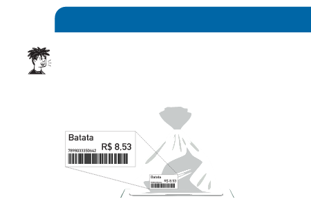
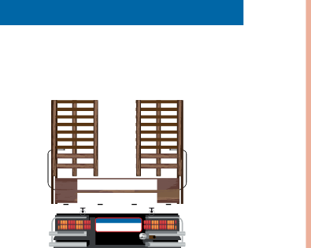

PRATICANDO
1)
IDENTIFIQUE, NAS IMAGENS A SEGUIR, QUE TIPO DE INFORMAÇÃO CADA NÚMERO INDICA.
Resposta esperada: Medida e código.
A)

Batata
R$ 8,53
2.560 kg
Fernando José Ferreira
B)

COMPRIMENTO 23 metros
LARGURA 3 metros
FYL8E58
BRASIL
Fernando José Ferreira
NÚMEROS PARA ORDENAR
OS SÍMBOLOS
1º, 2º, 3º, 4º, 5º, 6º, 7º, 8º, 9º, 10º
OU
1ª, 2ª, 3ª, 4ª, 5ª, 6ª, 7ª, 8ª, 9ª, 10ª
E ASSIM POR DIANTE INDICAM ORDEM.
CONVERSE COM OS COLEGAS SOBRE SITUAÇÕES EM QUE USAMOS NÚMEROS PARA ORDENAR.
EDSON ARANTES DO NASCIMENTO, MAIS CONHECIDO COMO PELÉ, FOI ELEITO O MELHOR JOGADOR DO SÉCULO XX.
SEU APELIDO TEM 4 LETRAS.
VEJA NO ALFABETO A ORDEM DE CADA LETRA DO NOME DELE.
P
E
L
É
16ª
5ª
12ª
5ª
ATIVIDADE COMPLEMENTAR
Ao solicitar aos estudantes que pensem sobre situações em que usam números, proponha a elaboração de um mural coletivo sobre o uso dos números no dia a dia para expor o máximo de situações em que os números são importantes, como no mercado, no trabalho, nas contas de casa, na hora, na música etc.